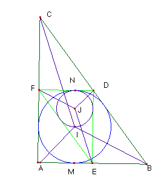

Problema nº 80.-
Sea un
triángulo ABC rectángulo en A de lados 3cm, 4 cm y 5cm. Construyamos el
triángulo EDF formado por sus puntos medios. Demostrar que el incentro de ABC
está en la circunferencia inscrita a EDF.

Solución de Saturnino Campo Ruiz, profesor de Matemáticas del I.E.S. Fray Luis de León (Salamanca) (4 de marzo de 2003)Si los lados del triángulo EDF son la mitad de los del triángulo ABC, el radio de su circunferencia inscrita es la mitad del radio de la circunferencia inscrita en ABC. Si I es el incentro de ABC y J el de EDF, el segmento IM es el doble de JN; 2JN = IM y ambas circunferencias tangentes en N, pues FD y AB son paralelos y están a distancia DE que es el diámetro del círculo de centro I. Luego los puntos I, J y N están alineados, siendo I y N extremos de un diámetro del círculo inscrito en EDF.